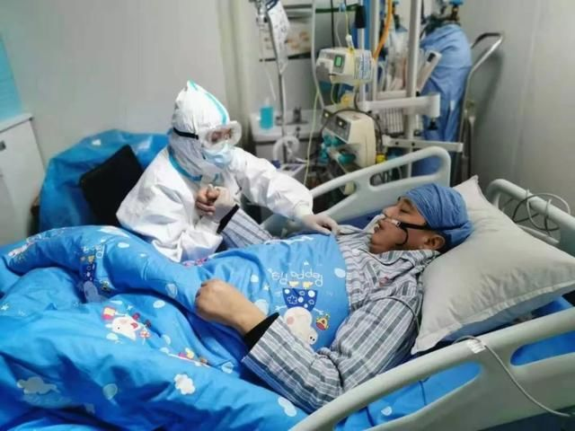

“战友变患者”的武汉医生：我们怕了、退了，武汉怎么办？
原文链接 备份链接 ********** *****现在如果能多一点N95口罩、给我们医院捐赠一些无创呼吸机，就更加好了。***** 身穿防护服的蔡毅。受访者供图 文 | 新京报记者 周小琪 编辑｜陈晓舒 校对 | 杨许丽 ►本文 …
蔡利萍脖子上有一道深深的疤痕，清晰可见，那是 2019 年 11 月她做颈椎手术留下的，此后，她在家休养。
当疫情袭来时，她还有一个月假期没休完，可她坐不住了。
「孩子们可能忙不过来，我就提前回来了。」蔡利萍曾对媒体这么解释。她口里的孩子，是一群 90 后为主力的 ICU 护士，护士们也视她为「蔡妈」。
「蔡妈，我要哆啦 A 梦！」「我要佩奇！」进隔离病房前，蔡利萍会一遍遍检查护士们的防护衣穿戴，并在白色的防护衣上，写上鼓劲的话语，画上一个卡通形象。
「哪是什么战士，都是一群孩子。」护士们遇到问题、受了委屈，都会找她诉苦，甚至哭鼻子。从她这，总能得到劝解和安慰。
让她挂在心上的还有丈夫。她给丈夫起的微信备注是「小肚鸡肠老公」：「你每天中午 2:00 给我打电话，不然我不放心，晚上也不接电话。」
2 月 3 日她对丈夫说，中午 2 时是她从隔离病区下班的时间，她的班次是从早 6 时到中午 13 时，共计 7 个小时。
出了隔离病区，下班后，蔡利萍脱下防护服，里头的深绿色的短袖洗手衣，早已被汗湿透。武汉市第三医院宣传科的李菡见证了蔡利萍对刘智明的思念。2 月 4 日，早晨进隔离病区前、中午出隔离病区后，她的头一件事都是给丈夫拨视频通话。连续打了 4 次，都没有接通。那时，刘智明正躺在武昌医院的重症病区，戴着呼吸机。
谁也没想到，刘智明会倒在这场仗刚打响的时候。
在武汉市卫健委 1月 20 日公布的首批 61 家发热门诊医疗机构名单中，武昌医院和武汉市第三医院均列其中。「战疫」，让一度各自为战的夫妻档，再次被牵在了一起。
1 月 21 日，刘智明给妻子打电话，告知武昌医院要在 2 天内转运患者，进行院区改造，所有病房均改造为隔离病房，接收发热患者。
这让蔡利萍有些担心，因为刘智明已经轻微发热、全身没劲了好几天，她担心他的身体「撑不住」。当时，两人还不知道这是新冠肺炎的症状，警觉性没有这么强。
此时，蔡利萍也接到通知，武汉市第三医院作为武昌医院的定点支持医院，接收转运患者。
1 月 22 日凌晨 4 时，她接到丈夫电话，请她帮忙收拾一点换洗衣物，因为医院很忙，他就不回家了，马上要上班。蔡利萍对媒体回忆，当时她感觉丈夫呼吸有点急促，提醒丈夫他呼吸有点问题，不能轻视。
凌晨 4 时丈夫还在工作，这加剧了蔡利萍的不安。
到了 1 月 23 日下午，她再次接到的却是坏消息：刘智明进了重症病区。
1 月 23 日，刘智明曾前往隔离病房，查看病房改造进度。武昌医院医生魏华曾在当天上午偶遇刘智明，「他脸色憔悴，黑眼圈很重，感觉蛮累的样子」，魏华回忆。
「第一次在病区名单看到刘智明这个名字，我们第一反应都是这是同名同姓吧……（院长）这么年轻，肯定能扛过去的。」武昌医院重症监护室的一名医生说。
当天，刘智明被确诊为感染新冠肺炎。据湖北省卫健委通报，1 月 23 日，武汉市新增确诊病例 70 例，累计病例 495 例。
而蔡利萍也于当天接到通知，她所在的光谷院区成为武汉市第二批发热定点医院，要在 3 天内完成改造和患者转运。
20 多位重症患者的转运，难度大、风险高。当时武汉大部分医院的重症监护室都已满员，找到接收患者的医院很难。
不眠不休了两天，蔡利萍和 ICU 的医生、护士们一道，转运安置了所有患者。

蔡利萍在 ICU 看护患者
图片来源：武汉市第三医院 江泓颖 李菡
事业和家庭，两头拉扯着蔡利萍。
「不好」、「很不好」、「越来越不好」、「一度氧饱和低到 80，怎么都上不去」，蔡利萍陆续接到丈夫的主诊医生发来的病情。
干了二十多年医护，夫妻俩都明白，血氧饱和低意味着什么。
「刘院长是个很乐观的人，确诊感染后，他看着自己片子、给自己开医嘱。」武昌医院神经外科胡俊医生说，「可后来病情恶化，他连说话都没有力气了。」
密集的排班、丈夫不断恶化的病情，蔡利萍兼顾的吃力可想而知。
她不是没有想过有个取舍。她真的，真的很想放下这一切去陪丈夫，她先后问过几次丈夫，「我来照顾你吧？」
可刘智明的回复一如既往，拒绝，拒绝，还是拒绝。

2 月 4 日，蔡利萍出了隔离病区，脱下防护服，
深绿色的短袖洗手衣早已被汗湿透
图片来源：武汉市第三医院 李菡
1 月 27 日，武汉市第三医院光谷院区正式开始接收患者。一天半里，所有病区全满。蔡利萍所在的重症病区平时就被视为「离死神最近的地方」，随着疫情的日益加剧，更是让人踹不过气来。
蔡利萍心疼「孩子们」。心疼护士们体力透支后，晕倒在更衣间；心疼护士们换班后，需要吸氧；心疼护士们饿得犯了胃病，还要喝咖啡、红牛苦撑；心疼护士们隔离服下湿透了的洗手衣。
作为护士长，蔡利萍要操心的事太多，危重患者、医护团队的磨合、护士们的想法，甚至设备仪器的调试和使用。
病区总共调配了 14 台呼吸机，不同的原产国，不同的型号，这就意味着需要不同的配件。
为了短时间内使这些机器配足配件全部启用，蔡利萍找社区卫生服务中心、找厂商、找自己的人脉……终于全部配齐，让所有危重患者，都及时用上了支持生命的呼吸机。
随着病情的加重，刘智明也开始上呼吸机。1 月 24 日，他被送进 ICU，经抢救后，病情有所好转。2 月 3 日晚 21 时 9 分，刘智明跟妻子发微信说，「昨晚折腾了一晚上，怎么搞氧合上不来，我以为我要死了，缺氧，烦躁，全身虚汗。今早打了呼吸机，好多了！」
当日，在跟丈夫微信视频时，蔡利萍哭着对刘智明说：「我来陪你吧！」
屏幕那头，不能说话的刘智明，摇了摇头。
原文链接 备份链接 ********** *****现在如果能多一点N95口罩、给我们医院捐赠一些无创呼吸机，就更加好了。***** 身穿防护服的蔡毅。受访者供图 文 | 新京报记者 周小琪 编辑｜陈晓舒 校对 | 杨许丽 ►本文 …
原文链接 备份链接 本文约1471字 预计阅读时间4分钟 中青报·中青网武汉前方报道组 王嘉兴 大年初一，记者来到武汉市第五医院门诊大厅。接近中午12点，大厅里还排着多条长队，有的患者坐在自带的塑料小板凳上排队，所有的人都带着口罩。大厅里 …
原文链接 备份链接 妻子蔡利萍是武汉市第三医院光谷院区ICU护士长，也一直在一线抗疫。离丈夫所在的医院只有20公里路，夫妻俩却近一个月没见过面，靠电话断断续续联系着。 全文3080字，阅读约需6分钟 ▲武汉武昌医院院长刘智明去世 系第一 …
原文链接 备份链接 “他是一个英雄” 2月18日上午10点54分，武昌医院院长刘智明因感染新冠肺炎，经抢救无效去世，享年51岁。 “刘院长是一个很负责的人，内心非常强，我们医院的同事都很敬重他。他长得高高大大的，很有才气，结果说没就 …
原文链接 备份链接 澎湃新闻记者 汤琪 廖艳 温潇潇 薛莎莎 实习生 赵雨萌 夏梦洁 接送刘智明遗体的殡仪馆车辆抵达。 澎湃新闻记者 汤琪 图 在殡仪馆的车辆抵达前，不少人保持着沉默，有人时而将口罩取下，擦拭眼泪。 2月18日上午，湖北 …